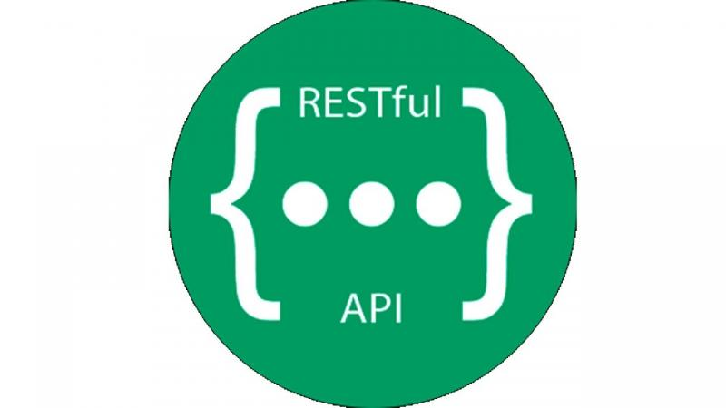

REST (REpresentational State Transfer) призван создать четко структурированный подход в написании прикладных интерфейсов. API – это некий набор правил, с помощью которых приложение или какой-либо один его компонент могут взаимодействовать с другим приложением или компонентом.
1.1 Что такое REST API?
REST - это концепция (архитектура) для организации взаимодействия между независимыми объектами (приложениями) посредством протокола HTTP. Включает в себя набор принципов (рекомендаций) взаимодействия клиент-серверных приложений. Обычно он представлен в формате JSON.
API - интерфейс взаимодействия с каким-либо объектом (программой, приложением), включающий в себя набор правил, которые позволяют одному приложению общаться с другим. Эти «правила» могут включать в себя операции создания, чтения, обновления и удаления. Примером API может служить всем известная библиотека jQuery.
REST API позволяет вашему приложению взаимодействовать с одним или несколькими различными приложениями, используя концепции REST.
1.2 Зачем нужен REST API?
Во многих приложениях REST API необходим, потому что это самый легкий способ создания, чтения, обновления или удаления информации между различными приложениями через Интернет или протокол HTTP. Эта информация представляется пользователю в одно мгновение, особенно если вы используете JavaScript для отображения данных на веб-странице.
1.3 Где используется REST API?
REST API может использоваться любым приложением, которое может подключаться к Интернету. Если данные из него могут быть созданы, прочитаны, обновлены или удалены с помощью другого приложения, это обычно означает, что используется REST API. То есть везде! :)
Примеры наших проектов, где мы использовали Rest API:
- Разработка интернет-магазина «Алкотека»
- Разработка и внедрение шахматки в CRM Битрикс24 для «Девелопмент-ЮГ»
- Разработка мобильного приложения для торгового центра «СБС Мегамолл»
Документацию по API, конечно же, пишем максимально подробную в GitBook. Покажем по запросу.